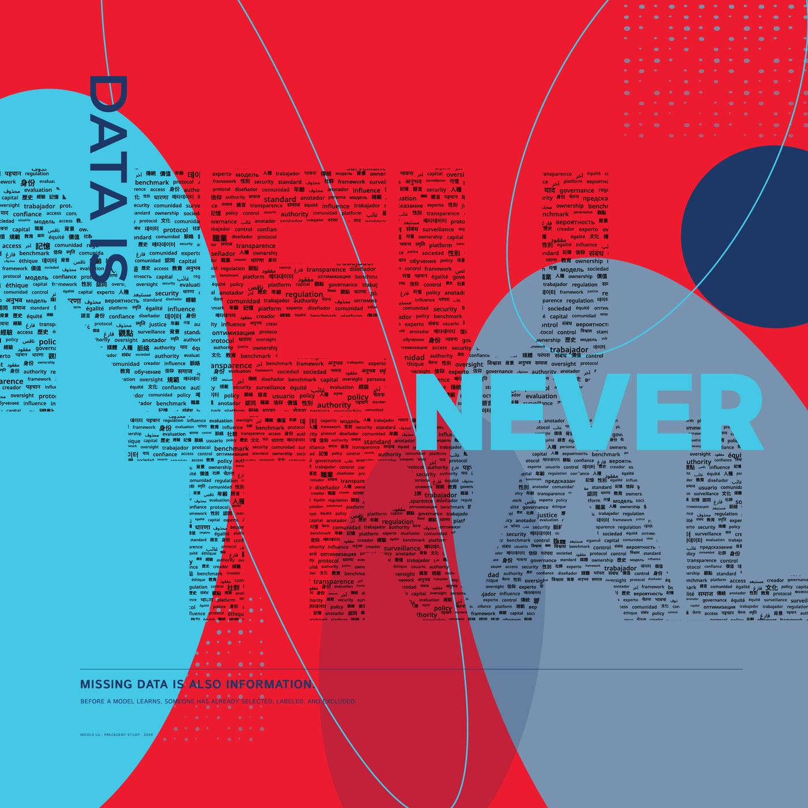

A Claim
At poster distance, the field resolves into one short statement: DATA IS NEVER NEUTRAL. Every dataset reflects decisions about what is included, excluded, categorized, and remembered.
Inspired by Google PAIR's Measuring Fairness and Hidden Bias, the poster shifts attention from the algorithm to the data itself, asking viewers to reconsider where bias begins.

From a distance, the poster reads as one direct statement: DATA IS NEVER NEUTRAL. Moving closer changes the meaning of that statement. The word NEUTRAL is not a single, stable form; it is constructed from words across nine languages and nine categories.
At poster distance, the field resolves into one short statement: DATA IS NEVER NEUTRAL. Every dataset reflects decisions about what is included, excluded, categorized, and remembered.
Up close, the letters are built from categorized words. What initially appeared unified and objective is revealed as an accumulation of selected data.
The background contains the same vocabulary at different densities and in different languages. Each viewer can understand only part of it, making incomplete access to data part of the experience.
The word field is composed from nine categories, each assigned a language and a different number of terms. The uneven quantities produce different densities within the letters and across the background.
| Category | Language | Words |
|---|---|---|
| Power | English | 30 |
| Culture | 中文 | 22 |
| Memory | Hindi | 12 |
| Human | Spanish | 11 |
| Missing | Arabic | 8 |
| Fairness | French | 7 |
| AI Pipeline | Russian | 6 |
| Social Categories | Japanese | 4 |
| Data | Korean | 3 |
Central claim“Neutral” is constructed from data—and no viewer has access to all of it.